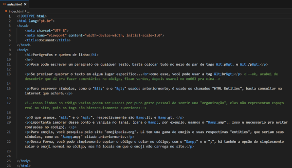

Você pode escrever um parágrafo de qualquer jeito, basta colocar tudo no meio do par de tags <p> e </p>
Se precisar quebrar o texto em algum lugar específico...
como esse, você pode usar a tag <br>
Para escrever símbolos, como o "<" e o ">" usados anteriormente, é usado os chamados "HTML Entities", basta consultar na internet que achará.
O que usamos, "<" e o ">", respectivamente são < e >.
Importante lembrar desse ponto e vírgula no final. (para o &, por exemplo, usamos o "&";. Isso é necessário pra evitar confusões no código).
Para emojis, você pesquisa pelo site "emojipedia.org". Lá tem uma gama de emojis e suas respectivas "entities", que seriam seus símbolos, como os "&" citado anteriormente.
Dessa forma, você pode simplesmente copiar o código e colar no código, com o "&" e o ";", há também a opção de simplesmente colar o emoji normal no código, mas há locais em que o emoji não carrega no site.
